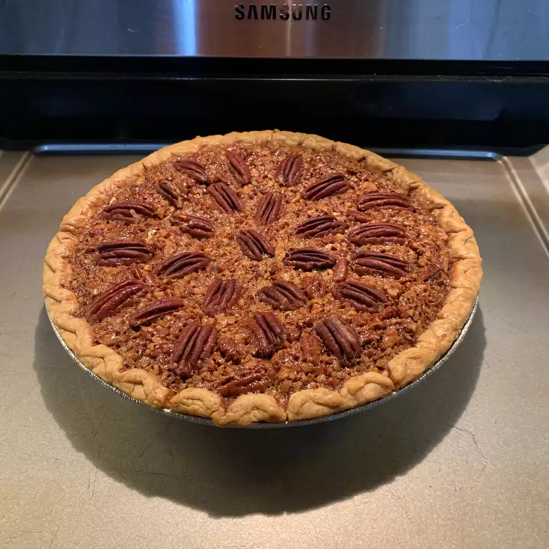

Pecan Pie

Description
A rich, delicious, and easy pecan pie.
Ingredients
- 3 eggs
- 1 cup brown sugar
- 1 tablespon all-purpose flour
- 1 cup corn syrup
- 2 tablespoons butter
- 1 teaspoon vanilla extract
- 1 1/2 cups pecans
- 1 (9 inch) unbaked pie shell
Steps
- Preheat oven to 350 degrees F (175 degrees C). Place pie shell in a 9 inch pie pan.
- In a medium bowl, gently beat eggs. Stir in sugar and flour, then the syrup, butter and vanilla. Fold in pecans. Pour mixture into pie shell. Bake for 50 to 60 minutes; knife inserted in center of pie should come out clean.